Bioresearch Laboratory
| This quest or instance is repeatable. | |||
|---|---|---|---|
| Difficulty | Cooldown | Tickets Available | |
|
Exploration/Combat Mode (shared cooldown) |
Resets at 0:00 |
Solo: 0 | Party: 0 |
|
Gauntlet Mode |
Resets at ∞ (This mode has no cooldown). |
Solo: 0 | Party: 0 |
Overview
Edda Bioresearch Laboratory (Biolab) recalls the events that occurred during the Rekenber experiments with Wolfchev. You'll be able to relive the last moments of the Rune Midgard Unofficial Expedition, namely Seyren Windsor, Kathryne Keyron, Margaretha Sorin, Howard Alt-Eisen, Cecil Damon and Eremes Guile. The story explains how these heroes lost their humanity and gained so much power, after their hearts have been been implanted with a Battle Core.
For now however, you'll meet with Sierra Morris and Nina. They are at the entrance of the burried laboratory, in Yuno. Thanks to the Virtual Records that were discovered, you are able to interpret the memories of those who perished in Biolab. However, interpreting the records is dangerous and your actions may make you seem suspicious to those in the memories. If that happens, Sierra will show up and guide you through the instance.
Walkthrough - Exploration Mode
| Requirements | |
|---|---|
| Base Level: | 170 |
| Starting Point: | yuno 216/345 |
| Rewards | |
| Experience: | None |
| Items: | 6x  Biological Experiment Fragments Biological Experiment Fragments
|
- Speak with Sierra in Yuno at
yuno 216/345. You can use the Warper > Instances > Bioresearch Laboratory. She'll explain to you what they're doing here and want you to join them. Accept their request.- 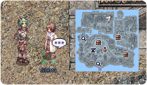
- Speak with her again and choose Synchronize Virtual Record > Exploration Mode to create the instance. Talk to her again and select Start Analysis.
This is for the story version of the instance, for the Battle Mode, select the appropriate option.. - Once inside, speak with Sierra and you will be warped to the presidential reception room.
- 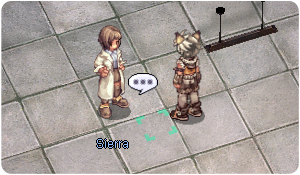
- Talk to all the Rune-Midgard Expedition members (there is no order):
- Seyren Windsor
- Kathryne Keyron
- Margaretha Sorin
- Howard Alt-Eisen
- Cecil Damon
- Eremes Guile
- A cutscene will trigger once you've spoken with all members.
- Speak with Sierra to be warped back to the situation room.
- Talk to Sierra again, then the Synchronization Device will appear.
- 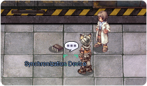
- The Synchronization Device wants you to follow the story of one of the six adventurers. All the options are fairly similar in terms of combat, and they're all relatively easy.
- If you went with a party, it is possible for members to follow a different story. However it is easier to stick with the same one.
- It is not required for other party members to follow this part of the story. Only one person has to do this part.
- All of the stories lead to the same point, so it doesn't matter which one you take.
Swordsman Laboratory - Seyren Windsor
- Click on the body of Seyren Windsor and defeat the Rekenber Guards.
- Seyren suddenly feels better. Talk to him to proceed.
- Exit the room and follow the corridor to the top left, until you meet Seyren again. There is nothing of interest elsewhere.
- Click on the Pecopeco once, this is important.
- Talk to Seyren again. He gets overwhelmed by the guards.
- Sierra will show up since Seyren is no longer conscious and you will be warped back to the situation room. Follow the guide at next step.
Acolyte Laboratory - Margaretha Sorin
- Speak with Seyren right after you get warped and defeat the Rekenber Guards.
- Go to the next room at the bottom right.
- Click on the Expiriment Report on the right side of Seyren. Defeat the guards that will appear.
- He gets overwhelmed by the guards.
- Sierra will show up since Seyren is no longer conscious and you will be warped back to the situation room. Follow the guide at next step.
Thief Laboratory - Eremes Guile
- Speak with Eremes behind you after you get warped and defeat the Rekenber Guards.
- Follow the corridor to the right, and then all the way to the bottom left.
- Talk to Eremes and defeat the guards.
- He gets overwhelmed by the guards.
- Sierra will show up since Eremes is no longer conscious and you will be warped back to the situation room. Follow the guide at next step.
Magician Laboratory - Kathryne Keyron
- Speak with Keyron behind you. She cannot speak because she's silenced.
- Exit the room to the left and then move all the way down.
- Speak with Keyren and defeat the guards.
- Eremes shows up just in time! Speak to him and more guards will show up.
- They get overwhelmed by the guards.
- Sierra will show up since they are no longer conscious and you will be warped back to the situation room. Follow the guide at next step.
Merchant Laboratory - Howard Alt-Eisen
- Speak with Howard and defeat the Rekenber Guards.
- Click on the Device north of the same room. Defeat the guards.
- Howard gets overwhelmed by the guards.
- Sierra will show up since Howard is no longer conscious and you will be warped back to the situation room. Follow the guide at next step.
Archer Laboratory - Cecil Damon
- Speak with Cecil and defeat the Rekenber Guards.
- Click on the Experiment Report at the top of the room.
- Go in the corridor and speak with Cecil again to start the surprise attack. Defeat the guards.
- She gets overwhelmed by the guards.
- Sierra will show up since Cecil is no longer conscious and you will be warped back to the situation room. Follow the guide at next step.
Continuation of the Expedition Mode
- Talk to the Synchronization Device.
- Talk to Sierra. All other party members will have to speak with Sierra to proceed. You will be warped in a room with Seyren.
- Speak to Seyren, he just woke up after being captured by the guards. He doesn't seem to remember much of what happened.
- Exit the room, follow the corridor below and enter the room. You find Eremes...
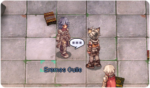 - Speak with Eremes Guile. Something doesn't feel right and Eremes attacks you. Hit him until he comes out of it.
- Talk to Eremes again. He remembers Keyron was in danger and needs your help!
- A portal will appear at the bottom right, outside of the room (it can be hard to see).
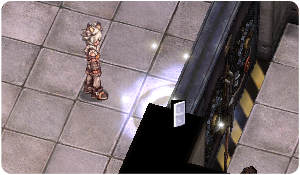 - Go to the bottom room and clear the guards.
- Speak with Seyren again. Keyron is in the glass tube and doesn't make it...
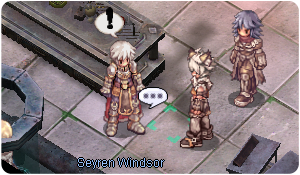 - Speak with Eremes. He wants you to ahead without him, he doesn't make it either.
- Another portal will appear, at the top right of the corridor, go inside.
- Seyren meets with Howard Alt-Eisen. Speak with Howard.
- Follow the corridor until the last room.
- Speak with Seyren.
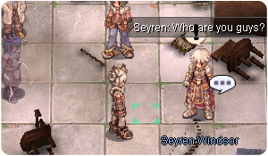 - You'll have to fight one of Wolfchev's experiment, Ygnizem (the Nameless Swordsman). It is a very weak version of the real MVP, you shouldn't have any trouble with this one.
- Talk to Howard and then move to the stairs, at the top right.
- Speak with Seyren at the bottom of the stairs. Sorin doesn't seem to recognize you.
- Follow her through the portal that just appeared.
- Speak with Seyren in the next area.
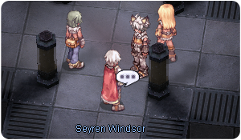 - Continue to the next room and speak with Seyren once more.
- You'll have to fight Ygnizem again.
- After her defeat, speak with Seyren again.
- Since nobody is conscious anymore, talk to Sierra and leave the area. You will be rewarded with 6x Biological Experiment Fragments.
Walkthrough - Combat Mode
| Requirements | |
|---|---|
| Base Level: | 170 |
| Starting Point: | yuno 216/345 |
| Rewards | |
| Experience: | None |
| Items: | 15x Biological Experiment Fragments 9x  Biological Research Documents Biological Research Documents1 random Biolab Weapon |
Combat Mode is very similar to Expedition Mode but without the story. In addition to this new mode, it has an extra fight with a MVP that has a chance to give you  Vicious Mind Aura, besides other stuff, and spawns a box that rewards 1 random weapon to each party member. Sierra will also reward you with some items to enchant your weapons if the MVP is successfully killed and you talk to her.
Vicious Mind Aura, besides other stuff, and spawns a box that rewards 1 random weapon to each party member. Sierra will also reward you with some items to enchant your weapons if the MVP is successfully killed and you talk to her.
Walkthrough
- Speak with Sierra in Yuno at
yuno 216/345. You can use the Warper > Instances > Bioresearch Laboratory. - Speak with her again and choose Synchronize Virtual Record > Combat Mode to create the instance. Talk to her again and select Start Analysis.
- As soon as you enter, wait for all party members before speaking with Sierra. Only the party leader will be able to speak with her.
- Once everybody is inside, talking with Sierra will teleport all members to the presidential room.
Be ready before proceeding, make sure you are fully buffed. Don't stand in the same cell as some enemy skills are AoE that can one shot many people at the same time. Make your tank move first as well to avoid your support classes dying. - First Zone:
- After killing the enemies, you will be warped to the next area.
- Be careful of the gas devices that will put your party members to sleep.
- Having 100 AGI or
 Nightmare Cards won't prevent the sleep status, but classes, like Arch Bishops, can remove it from other party members if they aren't affected.
Nightmare Cards won't prevent the sleep status, but classes, like Arch Bishops, can remove it from other party members if they aren't affected.
- Second Zone:
- As soon as the party enters in this new zone, monsters will spawn at the north-east.
- After all are dead, walk towards North where more monsters await you.
- After those are killed, walk left until you find the last section with monsters.
- Third Zone:
- The entire party will spawn in a section with monsters. Kill them and then move to top right.
- Keep walking to the left while killing everything you see in your way.
- Fourth Zone:
- Like in the previous zone, kill all monsters around to advance to the next section.
- If you get blind, look for a device nearby called Vision Device that will remove it for you. Alternatively, you can use @refresh to remove the blindness.
- In the next section walk South and kill all the monsters. Do the same at the North and walk East for the final section with monsters.
- Fifth Zone:
- Kill all the monsters in the room which will trigger the barricade flames to disappear.
- WARNING - DO NOT WALK/RUSH/RUN ALONE IN THIS ZONE, ALWAYS STAY TOGETHER WITH THE REST OF YOUR PARTY.
- It's very easy to transform a success into a fail in this zone for not following this advice.
- There are 4 areas to be very careful, 2 on each side.
- Each section encloses the members inside with monsters. If you don't want to transform a run into a fail, walk together with the members of you party to guarantee enough members inside that can kill those monsters or the instance may end right there.
- After all the sections are cleared, the entire party will be called to a new zone.
- Sixth Zone:
- Kill all the monsters that spawn with you to advance to the next section.
- Have a few members move to the bottom right after spawning to avoid being killed by the Nameless Swordsmans.
- In the next section, walk North and kill all the monsters that appear to advance to the final zone.
- Seventh Zone:
- Be careful with this zone, there are many enemies near where you spawn. If you are struggling, the bottom right should have the least amount of enemies.
- Kill everything that spawned.
- After that Sierra will appear.
- Check if everybody is alive and talk to Sierra to be teleported to the morgue where the MVP awaits you (Nameless Swordsman).
- MVP Room:
- As soon as you enter, talk to Sierra at your right to proceed with the instance. Then walk North until you enter a large room and wait for the remaining members of your party.
- WARNING - If you don't wait for everybody before the MVP spawns, those members can't loot the rewards of the instance nor help you with it.
- As soon as everybody is there, talk to the Sierra to start the fight. The area will be locked and nobody can join the room anymore.
- If you cannot kill the MVP quickly enough, you will have to deal with the mechanics of the fight:
- The mechanics of the boss fight consists on 4 small "cages" that will appear around the center (northwest, northeast, southwest and southeast from the center) with a single monster inside each, if you do not kill the boss quick enought you'll have the screen refresh and you will reappear close to the center of the room and a percentage of hp remaining depending on how many monsters in the "cages" were killed. Each monster represents 25% of hp, so if the screen refreshes and no monsters in the "cages" are killed you will be instantly killed, 1 monster killed = 25% of remaining hp, 2 monsters killed = 50% of remaining hp etc. You can only kill the monsters in the cages from the inside, so make sure to enter when the cages are appearing since you can't go in or out the cage once it's completely formed.
- After killing the MVP, loot your random weapon from the treasure box and talk to Sierra. You will be rewarded with 15 Biological Experiment Fragments and 9 Biological Research Documents to enchant your weapon(s).
Walkthrough - Gauntlet Mode
Gauntlet features double the amount of regular mobs, but no MVP. These mobs drop both enchantment catalysts: Biological Experiment Fragment and Biological Research Document.
Biological Experiment Fragment: 15% chance from Nameless Merchant, Nameless Swordsman and Rekenber Guard.
Biological Research Document: 12% chance from Nameless Acolyte, Rekenber Senior Guard and Regenschirm Scientist.
Also, these mobs can drop  Faux Gold if you are doing MH Hat Quest for Bio Weapon Helms
Faux Gold if you are doing MH Hat Quest for Bio Weapon Helms
Enemies
| Image | Name | Level | HP | Size / Race / Element |
|---|---|---|---|---|
| Regenschirm Scientist | 172 | 1,469,107 | Medium / Demi-Human / Neutral 2 | |
| Rekenber Guard | 176 | 1,475,486 | Medium / Demi-Human / Neutral 2 | |
| Rekenber Senior Guard | 174 | 1,475,486 | Medium / Demi-Human / Neutral 2 | |
| Nameless Swordsman | 176 | 1,519,762 | Medium / Demi-Human / Fire 2 | |
| Nameless Acolyte | 176 | 1,500,486 | Medium / Demi-Human / Holy 2 | |
| Nameless Merchant | 175 | 1,507,840 | Medium / Demi-Human / Fire 3 | |
Nameless Swordsman
|
180 | 75,000,000 | Medium / Demi-Human / Fire 2 |
Equipment
Vicious Mind Aura
Vicious Mind Aura drops from the MVP, Nameless Swordsman, at a 0.5% chance.
| Image | Name | Description |
|---|---|---|
| Vicious Mind Aura |
[+
Defense: 5 Location: Lower Weight: 10 Required Level: 170 Usable Jobs: All |

Weapons
Weapons are randomly obtained through the ??? Box at the end of 'Battle Mode' and also through the Biolab Inorganic Crate (MVP Drop).
| Image | Name | Description |
|---|---|---|
| Volar [2] |
Increases Bowling Bash damage by 30%.
Attack : 280 Weight : 280 Weapon Level : 4 Required Level : 170 Usable Jobs : Rune Knight | |
| Vernan [2] |
Atk + 5%.
Attack : 300 Weight : 650 Weapon Level : 4 Required Level : 170 Usable Jobs : Rune Knight | |
| Argen Blanco [2] |
Increases Brandish Spear damage by 30%.
Attack : 200 Weight : 100 Weapon Level : 4 Required Level : 170 Usable Jobs : Rune Knight | |
| Golden Wrench [2] |
Can't be destroyed, Atk + 5%.
Attack : 220 Weight : 550 Weapon Level : 4 Required Level : 170 Usable Jobs : Mechanic | |
| Engine Pilebunker [2] |
Can't be destroyed, increases Vulcan Arm damage by 10%.
Attack : 450 Weight : 320 Weapon Level : 4 Required Level : 170 Usable Jobs : Mechanic | |
| Maxi Spanner [2] |
Can't be destroyed, reduces physical and magical damage taken from small and medium size enemies by 10%.
Attack : 340 Weight : 450 Weapon Level : 4 Required Level : 170 Usable Jobs : Mechanic | |

|
Judgment Slasher [2] |
When equipped with Repent Slasher,
Attack : 195 Weight : 110 Weapon Level : 4 Required Level : 170 Usable Jobs : Guillotine Cross |
| Repent Slasher [3] |
This item is not enchantable Has no effect. Used for combo with Judgment Slasher.
Attack : 100 Weight : 70 Weapon Level : 4 Required Level : 170 Usable Jobs : Guillotine Cross | |
| Agudo Filo [2] |
Increases critical damage by 5%.
Attack : 270 Weight : 200 Weapon Level : 4 Required Level : 170 Usable Jobs : Guillotine Cross | |
| Ripper Cross [2] |
Atk + 5%.
Attack : 250 Weight : 150 Weapon Level : 4 Required Level : 170 Usable Jobs : Guillotine Cross | |
| Crimson Rose Stick [2] |
Matk + 180, can't be destroyed.
Attack : 100 Weight : 70 Weapon Level : 4 Required Level : 170 Usable Jobs : Warlock | |
| Staff of Miracle [2] |
Matk + 270, can't be destroyed.
Attack : 100 Weight : 120 Weapon Level : 4 Required Level : 170 Usable Jobs : Warlock | |
| 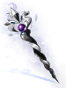 | Gravitation Staff [2] |
Matk + 280, can't be destroyed.
Attack : 110 Weight : 130 Weapon Level : 4 Required Level : 170 Usable Jobs : Warlock |
| Penitentia [2] |
Matk + 175, can't be destroyed.
Attack : 100 Weight : 70 Weapon Level : 4 Required Level : 170 Usable Jobs : Archbishop | |
| Adorare Staff [2] |
Matk + 240, can't be destroyed.
Attack : 100 Weight : 120 Weapon Level : 4 Required Level : 170 Usable Jobs : Archbishop | |

|
Lucis Flail [2] |
Matk + 160, can't be destroyed.
Attack : 180 Weight : 100 Weapon Level : 4 Required Level : 170 Usable Jobs : Archbishop |
| 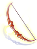 | Sharp Star [2] |
Cri + 5.
Attack : 150 Weight : 150 Weapon Level : 4 Required Level : 170 Usable Jobs : Ranger |
| Falken Shooter [2] |
Increases long ranged physical damage by 10%.
Attack : 210 Weight : 100 Weapon Level : 4 Required Level : 170 Usable Jobs : Ranger | |
| Aiming Bow [2] |
Reduces delay after skill by 5%.
Attack : 210 Weight : 100 Weapon Level : 4 Required Level : 170 Usable Jobs : Ranger | |
| Farthezan [2] |
Matk + 180, increases Gloria Domini damage by 40%.
Attack : 130 Weight : 110 Weapon Level : 4 Required Level : 170 Usable Jobs : Royal Guard | |
| Harve [2] |
Increases Rapid Smiting damage by 40%.
Attack : 210 Weight : 150 Weapon Level : 4 Required Level : 170 Usable Jobs : Royal Guard | |
| Fortridge [2] |
Atk + 5%.
Attack : 205 Weight : 170 Weapon Level : 4 Required Level : 170 Usable Jobs : Royal Guard | |

|
Estal [2] |
Reduces cooldown of Spore Explosion by 1 second.
Attack : 195 Weight : 70 Weapon Level : 4 Required Level : 170 Usable Jobs : Genetic |
| Coolant Injection [2] |
Can't be destroyed, increases long ranged physical damage by 10%.
Attack : 210 Weight : 140 Weapon Level : 4 Required Level : 170 Usable Jobs : Genetic | |
| Gene Rod [2] |
Can't be destroyed, increases Crazy Weed damage by 20%.
Attack : 195 Weight : 140 Weapon Level : 4 Required Level : 170 Usable Jobs : Genetic | |
| Jack the Knife [2] |
Increases Back Stab damage by 40%.
Attack : 195 Weight : 90 Weapon Level : 4 Required Level : 170 Usable Jobs : Shadow Chaser | |
| Platinum Dagger [2] |
Matk + 170, Matk + 5%.
Attack : 150 Weight : 150 Weapon Level : 4 Required Level : 170 Usable Jobs : Shadow Chaser | |
| 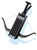 | Rapid Fire [2] |
Increases long ranged physical damage by 10%.
Attack : 185 Weight : 150 Weapon Level : 4 Required Level : 170 Usable Jobs : Shadow Chaser |
| Boltijin [2] |
Matk + 175, increases Fire Bolt, Cold Bolt and Lightning Bolt damage by 20%.
Attack : 120 Weight : 80 Weapon Level : 4 Required Level : 170 Usable Jobs : Sorcerer | |
| Psychic Spear Rod [2] |
Matk + 180, can't be destroyed.
Attack : 120 Weight : 80 Weapon Level : 4 Required Level : 170 Usable Jobs : Sorcerer | |
| Dust Grave [2] |
Matk + 180, can't be destroyed.
Attack : 120 Weight : 80 Weapon Level : 4 Required Level : 170 Usable Jobs : Sorcerer | |
| Raging Dragon Fist [2] |
Increases Raging Quadruple Blow damage by 30%.
Attack : 210 Weight : 70 Weapon Level : 4 Required Level : 170 Usable Jobs : Sura | |
| Dedicated Bandage [2] |
Increases long ranged physical damage by 10%.
Attack : 220 Weight : 80 Weapon Level : 4 Required Level : 170 Usable Jobs : Sura | |
| Bright Pendulum [2] |
Can't be destroyed, reduces variable casting time by 10%.
Attack : 210 Weight : 130 Weapon Level : 4 Required Level : 170 Usable Jobs : Sura | |
| 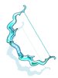 | Wind Gale [2] |
Increases long ranged physical damage by 10%.
Attack : 200 Weight : 100 Weapon Level : 4 Required Level : 170 Usable Jobs : Minstrel, Wanderer |
| Heart Whip [2] |
Matk + 190, increases neutral property magical damage by 10%.
Attack : 100 Weight : 120 Weapon Level : 4 Required Level : 170 Usable Jobs : Wanderer | |
| Scarlet Ribbon [2] |
Reduces variable casting time by 10%.
Attack : 180 Weight : 120 Weapon Level : 4 Required Level : 170 Usable Jobs : Wanderer | |
| Black Circle [2] |
Matk + 190, increases neutral property magical damage by 10%.
Attack : 100 Weight : 120 Weapon Level : 4 Required Level : 170 Usable Jobs : Minstrel | |
| Antique Cello [2] |
Reduces variable casting time by 10%.
Attack : 180 Weight : 120 Weapon Level : 4 Required Level : 170 Usable Jobs : Minstrel |
Enchanting
Enchant Costs
All weapons can be enchanted by Lavian, outside the entrance, one enchant slot at a time.
Enchantments cost Biological Research Document and Biological Experiment Fragment.
When enchanting a weapon you will be given 3 different options:
General Enchant - Cheapest option, high chance to fail, and has a chance to break the weapon.
Advanced Enchant - More pricey option, low chance to fail, has no chance to break the weapon.
Determined Enchant - Expensive option, lets you choose the final enchant you want. Only works for the 3rd Slot.
Note - The enchant cost applies per enchant slot. If there's no enchant in the weapon, you'll first enchant the 4th slot. Once there's an enchant in the 4th slot, you may also add an enchant to 3rd slot as per table below. You can't add an enchant to the 3rd slot, the memory, without having one in the 4th slot.
| Enchant Type | Enchantment Cost | Enchantment Slot | Failure Chance | Destroy Chance | Enchantments |
|---|---|---|---|---|---|
| General Enchant | x50 Biological Research Document
|
4th slot | 35% chance to fail | 5% chance to destroy the weapon (The roll to break only happens if the enchant fails) |
|
| 3rd slot | 70% chance to fail | 20% chance to destroy the weapon (The roll to break only happens if the enchant fails) |
| ||
| Advanced Enchant | x500 Biological Research Document
|
4th slot | 10% chance to fail | No chance to destroy the weapon | |
| 3rd slot | 30% chance to fail | No chance to destroy the weapon |
| ||
| Determined Enchant | x5000 Biological Research Document
|
3rd slot | No chance to fail | No chance to destroy the weapon |
|


Re-Rolling Enchants
You can re-roll both the 3rd and 4th slot enchants at the Weapon's Master NPC just outside of the instance entrance.
| Re-Enchant Type | Enchantment Slot | Re-Enchant Cost | Failure Chance | Destroy Chance |
|---|---|---|---|---|
| General Re-Enchant | 4th slot |
x50 x50 An extra copy of the weapon you are re-enchanting |
45% chance to fail | No chance to destroy the weapon |
| Advanced Re-Enchant | 4th slot |
x200 x200 An extra copy of the weapon you are re-enchanting |
5% chance to fail | No chance to destroy the weapon |
| Fragment Re-Enchant | 4th slot |
x40 x4000 An extra copy of the weapon you are re-enchanting |
2% chance to fail | No chance to destroy the weapon |
| Determined General Re-Enchant | 3rd slot | No chance to fail |
You can choose the Special Enchant that you want | |
| Determined Fragment Re-Enchant | 3rd slot | 20% chance to fail | No chance to destroy the weapon
You can choose the Special Enchant that you want
|
Special Enchants
| Image | Name | Description |
|---|---|---|
| Seyren's Memory |
Increases Bowling Bash damage by 10% and Ignition Break damage by 5% per 3 refine rate of Volar. | |
| Howard's Memory |
Increases Power Swing damage by 7% and Axe Boomerang damage by 5% per 3 refine rate of Golden Wrench. | |
| Eremes's Memory |
Increases Meteor Assault and Soul Destroyer damage by 10%, Cross Impact and Counter Slash damage by 5% per 5 of the sum of refine rate of Judgment Slasher and Repent Slasher. | |
| Kathryne's Memory |
Increases Hell Inferno damage by 7% and Crimson Rock damage by 5% per 3 refine rate of Crimson Rose Stick. | |
| Margaretha's Memory |
Increases Magnus Exorcismus damage by 10% and Judex damage by 5% per 3 refine rate of Penitentia. | |
| Cecil's Memory |
Increases critical damage by 5% and Focused Arrow Strike damage by 7% per 3 refine rate of Sharp Star. | |
| Randel's Memory |
Increases Gloria Domini damage by 10% and Genesis Ray damage by 5% per 3 refine rate of Farthezan. | |
| Flamel's Memory |
Increases Spore Explosion damage by 7% and reduces cooldown of Spore Explosion by 0.2 second per 3 refine rate of Estal. | |
| Gertie's Memory |
Increases Back Stab damage by 10% and Fatal Menace damage by 5% per 3 refine rate of Jack the Knife. | |
| Celia's Memory |
Increases Earth Spike damage by 10% and Heaven's Drive damage by 7% per 3 refine rate of Boltijin. | |
| Chen's Memory |
Increases Raging Quadruple Blow and Raging Thrust damage by 10%, Chain Crush Combo damage by 7% per 3 refine rate of Raging Dragon Fist. | |
| Trentini's Memory |
Reduces SP consumption of Severe Rainstorm by 3% and increases long ranged physical damage by 2% per 3 refine rate of Wind Gale. | |
| Alphoccio's Memory |
Reduces SP consumption of Severe Rainstorm by 3% and increases long ranged physical damage by 2% per 3 refine rate of Wind Gale. |
Cards
| Card | Type | Effects |
|---|---|---|
| Weapon Card |
| |
| Weapon Card |
| |
| Weapon Card |
| |
| Armor Card |
|